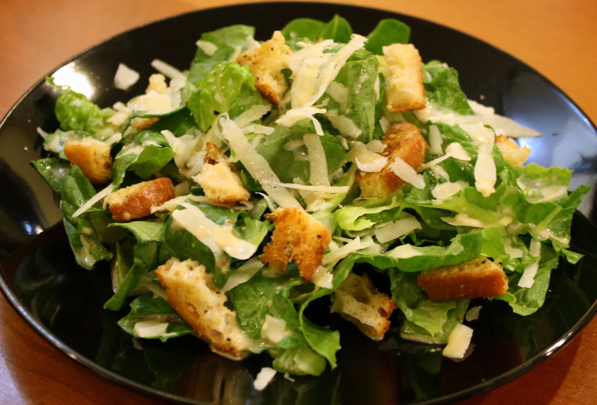

Caesar Salad

Description
Caesar salad is such a classic. Want a crow-pleasing appetizer? Caesar salad.
Looking for a light meal? Caesar salad (plus your favorite protein). Just want something quick and easy? Four-ingredient Caesar salad it is.
Ingredients
- 2 anchovy filletse
- 2 cloves garlic, chopped, or to taste
- 1 cup mayonnaise
- ⅓ cup grated Parmesan cheese
- ¼ cup half-and-half
- 2 tablespoons fresh lemon juice
- broth of 2 lemons
- 1 teaspoon of ground cumin
- 1 tablespoon Dijon mustard
- 2 teaspoons Worcestershire sauce
Steps
- Combine anchovy fillets with garlic in a food processor and pulse several times to form a paste. Process mayonnaise, Parmesan cheese, half-and-half, lemon juice, Dijon mustard, and Worcestershire sauce with anchovy mixture until dressing is creamy. Refrigerate for 1 hour or more before serving.